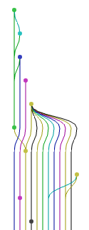

Asciidoctor, documentation from the undead (code)
. .
___. ` _/_ __. ___ _/_ __. \,___, , . ____
.' ` | | .---' .' \ .' ` | .' \ | \ | | (
| | | | | | | | | | | | | | `--.
`---| / \__/ `._.' `._.' \__/ `._.' |`---' `._/| \___.'
\___/ \
ease deployment and testingProblem to solve multiple branches need to test them quickly without deploying on multiple host detect conflicts early Solution flatten all branches to a temporary one deploy the result to allow testing Process Every developer work on his branches Normalize naming relative to issues (fix/XXX-123 or feature/XXX-456) Manually trigger the octopus deploy (for the time being) Results 
A meta branch containing everything flattened on top of your master branch.
Tooling stage('Run octopus merge on specified branches') {
//see install guide on http://linuxbrew.sh, then brew install git-octopus
env.PATH = "/home/jenkins/.linuxbrew/bin/:${env.PATH}" (1)
sh "git octopus ${BRANCH_TO_MERGE} origin/master" (2)
}
stage('Push octopus to bitbucket') {
sshagent([credentialId]) {
sh 'git push origin +HEAD:refs/heads/octopus'
}
}
1 git-octopus has been installed with linuxbrew
2 We trigger the merge of a build parameter (*/PR-* by default)
Deploying stage("Deploy octopus on ${name}") {
build job: 'Project - build branch and deploy', (1)
parameters: [
[$class: 'StringParameterValue',
name: 'BRANCH_TO_BUILD', value: 'octopus'], (2)
[$class: 'StringParameterValue',
name: 'NODE_TO_DEPLOY', value: machine] (3)
]
}
1 Building app job
2 Parameter specifiying the branch to build
3 The target machine as a parameter
Conflicts ? can they be resolved automatically ? feature branch not merging cleanly with master branch ? feature branches not merging cleanly with each other ? Automatic resolution Simple merge did not work, trying automatic merge.
Auto-merging src/main/groovy/MyClass.groovyConflict with master branch Testing merges one by one with 11ad91...
merging refs/remotes/origin/feature/PRJ-160 ... FAILUREWork on your machine git checkout feature/PRJ-160
git merge origin/master
# resolve conflicts
git push -u origin feature/PRJ-160Conflict between two parallel branches Trying simple merge with refs/remotes/origin/fix/PRJ-100
Trying simple merge with refs/remotes/origin/fix/PRJ-200
Simple merge did not work, trying automatic merge.
Auto-merging src/main/groovy/MyClass.groovy
ERROR: content conflict in src/main/groovy/MyClass.groovy
fatal: merge program failed
Automated merge did not work.Work on your machine git checkout feature/PRJ-100 (1)
git conflict feature/PRJ-200 (2)
# resolve conflict
git add (3)
git conflict --continue (4)
git push origin refs/conflicts/d4d093 (5)
1 Checkout the branch that does not merge cleanly with another
2 Mark a conflict with the other branch
3 Resolve the conflict using your preferred tool
4 Save the resolution
5 Push it to remote to allow Jenkins to catch it later
Result on CI Trying simple merge with refs/remotes/origin/fix/PRJ-100
Trying simple merge with refs/remotes/origin/fix/PRJ-200
Simple merge did not work, trying automatic merge.
Auto-merging src/main/groovy/MyClass.groovy
ERROR: content conflict in src/main/groovy/MyClass.groovy
fatal: merge program failed
Applying conflict resolution d4d093The thing that makes everything work refspec: '+refs/heads/*:refs/remotes/origin/* ' +
'+refs/conflicts/*:refs/conflicts/*' (1)
1 This tells to fetch conflict refs too
Results snapshot of all deployments available allow conflict resolution at an early stage